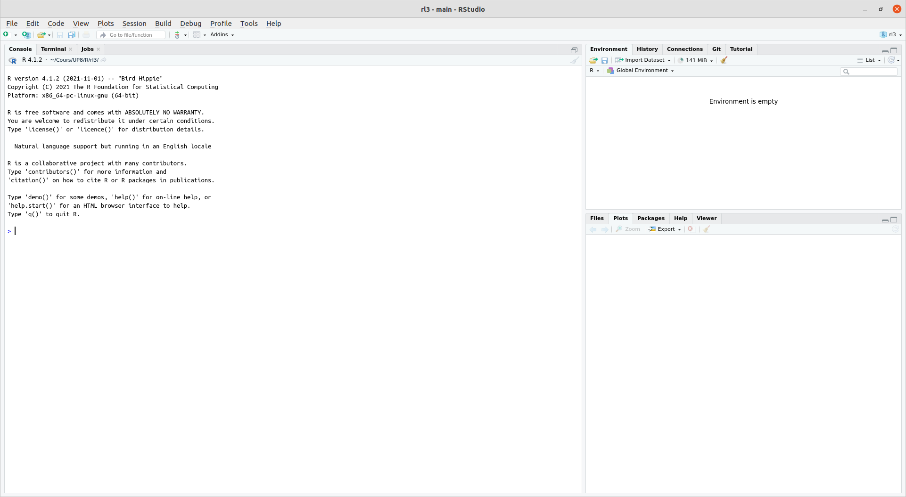
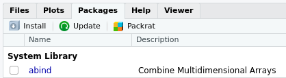

Premiers pas avec R
L3 économie-finance
Ce cours
Où nous allons
Cinq séances de trois heures, sur machine.
| Séance | Objet |
|---|---|
| 1 | Premiers pas : objets, types, vecteurs, fonctions |
| 2 | Découvrir un tableau de données |
| 3 | Décrire des données |
| 4 | Représenter des données |
| 5 | Projet : une analyse complète |
À la fin, vous serez capables de prendre un jeu de données, de le décrire et d’en tirer des graphiques lisibles.
Comment
- Un seul jeu de données pendant tout le cours : l’enquête Histoires de vie de l’INSEE. Vous finirez par bien le connaître, et c’est voulu.
- Une seule famille d’outils, le
tidyverse, à partir de la séance 2. - Des exercices interactifs avec
swirl, à faire en séance et à terminer chez vous. Le temps en salle sert à pratiquer. - Chaque séance commence par une reprise de dix à quinze minutes sur la séance précédente.
Une remarque sur les assistants IA
Vous pouvez tout à fait utiliser ChatGPT, Gemini ou Claude en dehors du cours. Ils vous donneront presque toujours une réponse, parfois fausse, et pas toujours simple à comprendre.
Important
Le problème n’est pas qu’ils se trompent : c’est que vous ne pouvez pas le voir tant que vous ne savez pas faire sans eux. Ces cinq séances servent à acquérir de quoi les juger.
Pendant les séances, servez-vous de l’aide de R et des messages d’erreur. C’est ce que vous apprendrez ici.
Charte IA de l’université : https://www.univ-paris8.fr/IMG/pdf/02_chartes_cadre_ia_up8.pdf
Introduction à R
La console
Au premier lancement de RStudio, l’interface est organisée en trois grandes zones.
La zone de gauche se nomme la Console. À son démarrage, RStudio a lancé une nouvelle session de R et c’est dans cette fenêtre que nous allons pouvoir interagir avec lui.
Faire la démonstration en direct.
Console
La Console affiche un texte de bienvenue suivi d’une ligne commençant par le caractère > (l’invite de commande).
Fournissons une première commande, en saisissant le texte suivant et en appuyant sur Entrée.
2+2[1] 4Le symbole > réapparaît, et nous pouvons lancer d’autres opérations :
5-7[1] -24*12[1] 48-10/3[1] -3.3333335^2[1] 25Les opérations arithmétiques
| Math | code R |
Résultat |
|---|---|---|
| \(3 + 2\) | 3 + 2 |
5 |
| \(3 - 2\) | 3 - 2 |
1 |
| \(3 \times 2\) | 3 * 2 |
6 |
| \(3 \div 2\) | 3 / 2 |
1.5 |
| \(3^2\) | 3 ^ 2 |
9 |
| \(\sqrt{100}\) | sqrt(100) |
10 |
Autres fonctions mathématiques
R dispose des fonctions mathématiques usuelles. Vous n’en aurez pas besoin dans les prochaines séances, mais elles vous serviront ailleurs.
| Math | code R |
Résultat |
|---|---|---|
| \(\pi\) | pi |
3.141593 |
| \(e\) | exp(1) |
2.718282 |
| \(\ln(x)\) | log(x) |
logarithme naturel |
| \(\log_{10}(1000)\) | log10(1000) |
3 |
| \(10^2\) | 1e2 |
100 |
Note
Attention : il n’y a pas de fonction ln() en R. Le logarithme naturel s’écrit log().
Espaces et lisibilité
À de rares exceptions près, les espaces autour des commandes ne sont pas pris en compte. Les 3 commandes suivantes sont équivalentes :
10+2
10 + 2
10 + 2La pratique standard est d’utiliser la deuxième écriture, afin d’avoir un code lisible.
R bloqué
Il peut arriver qu’on saisisse une commande incomplète. R remplace alors l’invite > par un + : il attend la suite.
> 4 *
+
Astuce
Complétez la commande, ou appuyez sur Échap pour tout annuler et revenir à une invite normale.
Objets
Objets
Nous savons utiliser R comme une calculatrice. Pour une utilisation plus avancée, on peut stocker le résultat d’un calcul dans un objet à l’aide de l’opérateur d’assignation <-.
Cette « flèche » stocke ce qu’il y a à sa droite dans un objet dont le nom est indiqué à sa gauche.
x <- 2Se lit « prend la valeur 2 et mets-la dans un objet qui s’appelle x ».
Afficher la valeur d’un objet
x[1] 2Lors d’une opération d’assignation, R n’affiche pas le résultat de l’opération. Si on exécute une commande comportant juste le nom d’un objet, R affiche son contenu. Bien indiquer aux étudiants que l’assignation entraîne un non affichage du résultat.
Utilisation d’un objet
On peut réutiliser cet objet dans d’autres opérations : R le remplacera alors par sa valeur.
x + 4[1] 6On peut créer autant d’objets qu’on le souhaite.
x <- 2
y <- 5
resultat <- x + y
resultat[1] 7Si on assigne une nouvelle valeur à un objet, la valeur précédente est perdue.
x <- 2
x <- 5
x[1] 5Assigner un objet à un autre copie juste la valeur de l’objet de droite dans celui de gauche.
x <- 1
y <- 3
x <- y
x[1] 3Exercice
Dans la console :
- Créez un objet
agecontenant votre âge, et un objetprenomcontenant votre prénom. - Créez un objet
annee_naissancecalculé à partir deage. - Que se passe-t-il si vous tapez
Ageau lieu deage? - Peut-on mettre un espace dans un nom d’objet ? Un chiffre au début ?
10 minutes. La question 3 fait apparaître le premier message d’erreur : ne pas la sauter, elle prépare la section sur les erreurs.
Types
Chaîne de caractères
Les valeurs contenues dans les objets peuvent être de différents types.
Jusqu’ici on n’a stocké que des nombres, mais un objet peut aussi contenir une chaîne de caractères (du texte), qu’on délimite avec des guillemets simples ou doubles (' ou ") :
chien <- "Chihuahua"
chien[1] "Chihuahua"Conditions logiques (booléens)
Ou des conditions logiques (TRUE ou FALSE), généralement issues de comparaisons :
valeur <- TRUE
valeur[1] TRUEchien == "Doberman"[1] FALSE3 < 2[1] FALSEOn appelle TRUE et FALSE des booléens.
Opérateurs logiques
| Opérateur | Résumé | Exemple | Résultat |
|---|---|---|---|
x < y |
x plus petit que y |
3 < 42 |
TRUE |
x > y |
x plus grand que y |
3 > 42 |
FALSE |
x <= y |
x plus petit ou égal à y |
3 <= 42 |
TRUE |
x >= y |
x plus grand ou égal à y |
3 >= 42 |
FALSE |
x == y |
x égal à y |
3 == 42 |
FALSE |
x != y |
x différent de y |
3 != 42 |
TRUE |
!x |
non x |
!(3 > 42) |
TRUE |
x | y |
x ou y |
(3 > 42) | TRUE |
TRUE |
x & y |
x et y |
(3 < 4) & (42 > 13) |
TRUE |
Avertissement
La comparaison s’écrit ==, avec deux signes égal. Un seul = ne compare pas : il assigne. C’est l’erreur la plus fréquente au début, et elle ne provoque pas toujours de message.
Ces opérateurs serviront tout le cours
Vous les retrouverez dès la séance 2, pour sélectionner des lignes dans un tableau :
# Séance 2 : les enquêtés de moins de 25 ans
d |> filter(age < 25)Ignorer pour l’instant le sens du pipe |>.
Vecteurs
Vecteurs
Imaginons qu’on ait demandé la taille en centimètres de cinq personnes et qu’on souhaite calculer leur taille moyenne.
On stocke l’ensemble de ces tailles dans un seul objet, un vecteur :
tailles <- c(156, 164, 197, 147, 173)
tailles[1] 156 164 197 147 173où c() veut dire « combine les valeurs suivantes dans un vecteur ».
Opérations sur un vecteur
Une opération appliquée à un vecteur s’applique à chacun de ses éléments :
tailles + 10[1] 166 174 207 157 183tailles^2[1] 24336 26896 38809 21609 29929Opérations entre vecteurs
Imaginons qu’on ait aussi demandé aux cinq mêmes personnes leur poids en kilos.
poids <- c(45, 59, 110, 44, 88)On peut alors calculer l’indice de masse corporelle de chacun, en divisant le poids en kilos par la taille en mètres au carré :
imc <- poids / (tailles / 100) ^ 2
imc[1] 18.49112 21.93635 28.34394 20.36189 29.40292
Astuce
Une seule ligne calcule les cinq indices. C’est le principe central de R : on travaille sur des colonnes entières, pas sur des valeurs une par une.
Un vecteur a un seul type
Un vecteur peut contenir du texte :
diplome <- c("CAP", "Bac", "Bac+2", "CAP", "Bac+3")
diplome[1] "CAP" "Bac" "Bac+2" "CAP" "Bac+3"Mais pas mélanger les types. Si on essaie, R convertit tout :
chiens <- c("Chihuahua", 5, "Doberman", 15)
chiens[1] "Chihuahua" "5" "Doberman" "15"
Avertissement
Remarquez les guillemets autour des nombres : R les a transformés en texte, sans prévenir. Vous ne pourrez plus faire de calcul avec. C’est une source d’erreur classique lors de l’import de données.
Vecteurs de nombres consécutifs
L’opérateur : génère un vecteur contenant tous les entiers entre deux valeurs :
x <- 1:10
x [1] 1 2 3 4 5 6 7 8 9 10Accès à un élément
On accède à un élément d’un vecteur en faisant suivre son nom de crochets contenant la position voulue.
diplome[2][1] "Bac"tailles[c(1, 3)][1] 156 197Affichage dans la console
Si un vecteur contient beaucoup d’éléments, l’affichage est réparti sur plusieurs lignes :
[1] 294 425 339 914 114 896 716 648 915 587 181 926 489
[14] 848 583 182 662 888 417 133 146 322 400 698 506 944
[27] 237 324 333 443 487 658 793 288 897 588 697 439 697Le nombre entre crochets en début de ligne indique la position du premier élément de la ligne. Ainsi le 848 est le 14e élément du vecteur.
Ceci explique le [1] qui apparaît quand on affiche un simple nombre : pour R, un nombre est un vecteur à un seul élément.
Fonctions
Une fonction
Une fonction a un nom, prend en entrée des arguments entre parenthèses, et renvoie un résultat.
length(tailles)[1] 5mean(tailles)[1] 167.4Arguments
Certaines fonctions prennent plusieurs arguments, qui portent un nom.
tailles_incompletes <- c(156, 164, NA, 147, 173)
mean(tailles_incompletes)[1] NAmean(tailles_incompletes, na.rm = TRUE)[1] 160NA (Not Available) signale une valeur manquante. La moyenne d’un ensemble contenant une valeur inconnue est inconnue : d’où le premier résultat.
L’argument na.rm = TRUE demande d’écarter ces valeurs avant de calculer.
Aide sur une fonction
On obtient l’aide sur une fonction avec ? :
?mean
help("mean")L’aide s’affiche dans le panneau en bas à droite. Elle est technique, mais elle est exacte et toujours disponible.
Astuce
Deux rubriques suffisent au début : Usage, qui donne la liste des arguments, et Examples, tout en bas, que vous pouvez copier dans la console pour voir la fonction à l’œuvre.
Exercice
Sur le vecteur imc calculé plus haut :
- Combien contient-il de valeurs ?
- Quel est le plus petit ? le plus grand ? (cherchez les fonctions dans l’aide si besoin)
- Ouvrez
?quantile. Que fait l’argumentprobs? - Calculez la médiane des tailles de deux façons différentes.
Quand ça ne marche pas
Lire un message d’erreur
R vous parle. Ses messages sont brefs, mais ils désignent presque toujours l’endroit exact du problème.
tailleErreur : objet 'taille' introuvableR vous dit qu’il ne connaît aucun objet portant ce nom. Notre vecteur s’appelle tailles, au pluriel.
Trois erreurs que vous rencontrerez aujourd’hui
means(tailles)Erreur : impossible de trouver la fonction "means""12" + 3Erreur : argument non numérique pour un opérateur binairemean(tailles+Une parenthèse n’est pas fermée : R attend la suite. Échap pour annuler.
La méthode
- Lisez la dernière ligne. C’est là qu’est le message.
- Repérez le nom cité entre guillemets. C’est presque toujours là qu’est la faute.
- Comparez-le à ce que vous avez tapé. Faute de frappe, singulier au lieu du pluriel, majuscule oubliée : R distingue
agedeAge. - Si le nom est correct, l’objet n’existe pas encore : avez-vous exécuté la ligne qui le crée ?
Important
Un message d’erreur n’est pas un échec, c’est un diagnostic. Le vrai problème, ce sont les codes qui tournent sans rien dire et donnent un résultat faux – nous en verrons en séance 3.
Scripts
Pourquoi un script
Jusqu’ici, nous avons tapé les commandes une à une dans la console. Rien n’est conservé : à la fermeture de RStudio, tout est perdu.
Un script est un fichier texte contenant vos commandes. On le crée avec File > New File > R Script. (Fichier > Nouveau Fichier > Script R)
# Tailles et poids de cinq enquêtés
tailles <- c(156, 164, 197, 147, 173)
poids <- c(45, 59, 110, 44, 88)
mean(tailles)
mean(poids)
# Indice de masse corporelle
imc <- poids / (tailles / 100) ^ 2
min(imc)
max(imc)Exécuter et commenter
Ctrl + Entréeexécute la ligne courante ou la sélection.- Tout ce qui suit un
#est ignoré par R : c’est un commentaire.
Astuce
Commentez ce que vous cherchez à faire, pas ce que fait la ligne. # calcule la moyenne au-dessus de mean(x) n’apprend rien à personne. # on écarte les non-répondants est utile.
À partir d’aujourd’hui, travaillez toujours dans un script, jamais directement dans la console.
Paquets
Installer une extension
Les fonctions supplémentaires sont distribuées sous forme de paquets (packages), diffusés sur un réseau de serveurs nommé CRAN.
On installe un paquet avec install.packages(), une seule fois, comme on installe un programme :
install.packages("questionr")
Charger un paquet
L’installation ne suffit pas : il faut charger le paquet à chaque nouvelle session, avec library().
library(questionr)On regroupe donc en début de script tous les appels à library :
library(tidyverse)
library(questionr)
Avertissement
Si vous obtenez impossible de trouver la fonction, c’est presque toujours qu’un library() manque en haut du script.
À vous
Installer swirl
swirl est un paquet qui vous fait pratiquer R de manière interactive, directement dans la console.
install.packages('swirl')
library(swirl)Indiquons-lui que nous souhaitons travailler en français :
select_language('french', append_rprofile = TRUE)Installer le cours
Le cours est disponible sur GitHub, à l’adresse https://github.com/EliasBcd/InitiationR. On l’installe directement depuis R :
install_course_github("EliasBcd", "InitiationR")Lancer une leçon
swirl()- swirl dialogue avec vous et vous demande un nom. Donnez votre numéro d’étudiant ou votre nom, et gardez le même toute l’année.
- Choisissez le cours « InitiationR », puis la leçon.
- Suivez les instructions dans la console.
Pour aujourd’hui : Manipulations_simples, Types, Vecteurs, Fonctions, Messages d’erreurs puis Logique.
Fin d’une leçon
À la fin d’une leçon, swirl vous propose de soumettre votre progression.
Répondez « Oui » : R ouvre votre navigateur sur la page Moodle où déposer le fichier .txt de la leçon.
Note
C’est ce dépôt qui valide votre travail. Faites-le à chaque leçon terminée.
Réinstaller le cours
En cas de problème :
uninstall_course("InitiationR")
install_course_github("EliasBcd", "InitiationR")Pour la prochaine séance
- Terminez les six leçons swirl et déposez-les sur Moodle.
Note
En option, pour pratiquer davantage : la leçon facultative Exercice_1 reprend vecteurs et fonctions de base. Voir LECONS_OPTIONNELLES.md.
Séance prochaine : nous abandonnons les vecteurs saisis à la main pour de vraies données d’enquête.
Ressources
Pour aller plus loin, ou revoir une notion à votre rythme :
- Le manuel de Julien Barnier, Introduction à R et au tidyverse, en français et disponible en ligne. Ce n’est pas un travail à faire : une référence à consulter librement, quand vous en avez besoin.
Note
Rien à lire pour la prochaine séance. Seules les leçons swirl sont attendues entre deux séances.